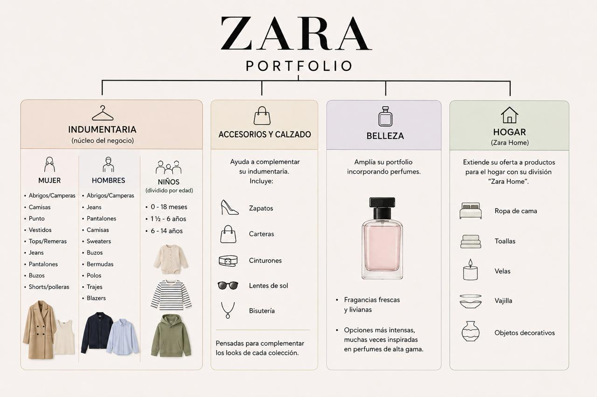

Estudio descriptivo del modelo de negocio, cobertura global y análisis del entorno competitivo (Fuerzas de Porter).
Fundada en 1975 en España, la idea original de Zara fue presentar productos de bajo precio similares a los de alta gama y la moda popular, lo que los hizo destacar y progresar en el mercado. En 1985 nace Inditex, el conglomerado textil del cual forma parte, con el objetivo de romper el modelo de la época al fabricar internamente la mayoría de sus productos.
Esta fabricación interna permitió reducir tiempos de producción y adaptar la demanda a la oferta real, dando origen al concepto que hoy conocemos como fast fashion.
Zara es una empresa global que no se limita a exportar, sino que produce, distribuye y coordina a nivel mundial. Combina la fabricación en Europa (España, Portugal, Turquía) con producción en Asia y otros mercados internacionales a través de una cadena logística global hiperconectada.
Mercados Globales
Locales Físicos
Tiendas en Europa
Consolidarse como líder mundial en la industria de fast fashion, llegando a todos los mercados con diseños actuales y accesibles.
Ofrecer moda accesible, atractiva y en tendencia a nivel global de manera rápida y desarrollada de manera responsable.

Físico: En etapa de consolidación a través de la táctica de "store optimization". Se cierran locales pequeños para abrir tiendas bandera (flagships) de gran formato en arterias principales. Presente en ~96 mercados, expandiéndose recientemente a territorios como Uzbekistán.
Digital: Ventas online en más de 200 mercados globales. El Sistema Integrado de Gestión del Inventario (SINT) permite que el stock de la tienda física esté 100% integrado a la venta web, logrando respuesta ágil ante los patrones de demanda.
Zara opera en el retail textil global, dentro del fast fashion, aunque recientemente se ha desplazado hacia el concepto de aspiración premium o "masstige".
Nivel de concentración: El sector global es muy fragmentado (diseñadores, comercio informal, marketplaces). Sin embargo, en el segmento de moda rápida hay una alta concentración competitiva alrededor de gigantes como Inditex, H&M, Shein, Uniqlo y Primark. La competencia es intensa y exige gran escala, capacidad logística y omnicanalidad.
Dimensión: En el ejercicio 2025, Inditex reportó ventas por €39.864 millones, de las cuales Zara (incluyendo Zara Home y Lefties) representó €28.051 millones, confirmando su rol de motor central del grupo.